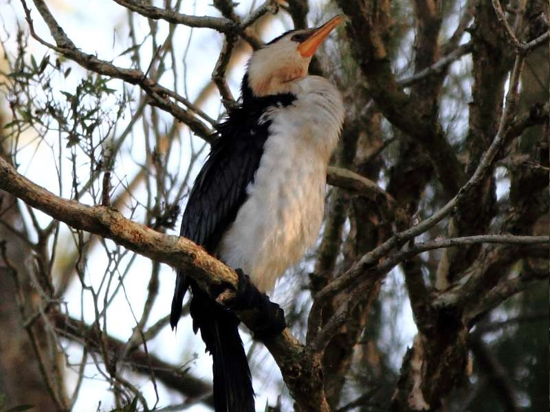

Parkinson is the home of thousands of unique and beautiful
species of a wide variety of wild life.
You can head over to the pier that oversees the lake to find
many kinds of aquatic creatures. There has been sightings of
the most exotic water including fresh water turtles and eels
as well as large schools of fish.
On the surface of the lake, you will find many kinds of
feathered animals including Dusky Moorhens, Eurasian Coots,
Pacific Black Ducks, Comorants and the occasional sighting
of majestic Black Swans including many more!
If you take a stroll through the woods, you may find
possums, snakes, lizards and if you're not careful; you find
yourself dive bombed by a magpie.
If you like animals, Parkinson's diverse ecosystem is sure
to satisfy your tastes. Just remember to bring a camera!